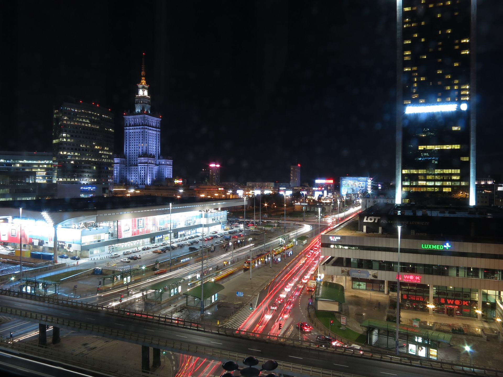
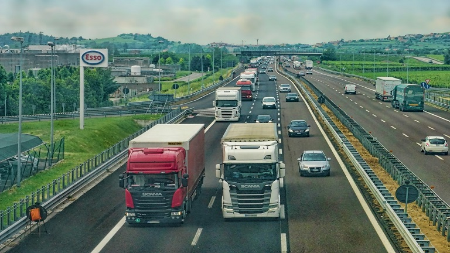

In this article, we will learn about IoT in Transportation. Society has adopted and widely applied the idea of smart transportation. At the same time,
smart transportation problems are emerging, and the Internet of Things is providing a new direction for its development. IoT-based transport systems
have realized the dream of a smart city administration system using powerful and advanced communication technologies. In this article, we will focus
on the IoT system for smart transportation and technologies that play a key role in the smart transport management system. We will further look at
the significance of IoT in the transportation sector and highlight multiple applications where IoT architecture can be deployed..

Role of IoT in Transportation
The transport sector plays a crucial role in the development process. Transportation needs depend on many factors such as goods availability,
movement of travelers, logistics, etc. Transportation, therefore, becomes an important and integral part of connecting consumers to the supply chain
team by logistics.
IoT integration helps in creating a centrally controlled network which can optimize the distance covered by the vehicle, find better and safe routes
in case of a critical situation, efficiently manage and maintain the goods, material and purchase orders and overall gives a positive impact on the
revenue generated by the transportation sector..
Public Transportation is one of the sectors that is quickly implementing IoT technologies that can benefit most from operational efficiency
improvements, cost-effectiveness, safety, and security. There are also limited challenges in the automotive industry and some excellent technologies
to benefit the transport market. When cities integrate wireless technology into traffic management and emergency response, the effect of IoT on
transportation efficiency is projected to be immense.
The Intelligent Transportation system will benefit four major segments:.
Benefits of IoT in the TRANSPORT industry -
Travelers Segment: People who will be benefited from the services provided by the Intelligent Transportation system.
Automobile Segment: IoT will have a huge impact on the vehicles and will change the way how one interacts with the vehicle.
Infrastructure Segment: Traffic management utilities such as traffic lights, cameras embedded with IoT will result in the smart management system.
Core Centers: The data generated from the automobiles and infrastructure will be analyzed and communicated between different segments.
Applications of IoT in Transportation
In the transportation and logistics business, the internet of things has numerous opportunities. Vehicles can be tracked for their speed, position, whether
they are running or stopped, or at any danger, etc., using IoT. In most situations, trucks are used for the purpose of transportation or to carry heavy loads.
Measuring the truck’s interior conditions such as humidity, temperature, and the light condition is very critical during these periods. Using an IoT transport
company can configure the payment service at the tolls or any parking tickets. IoT also allows vehicle guidance and navigation control systems (road, air, water
transport) monitoring and controlling transport is highly possible with the use of IoT. Let’s look at the different applications of IoT in transportation.
Conclusion
The Internet of Things is revolutionizing the global automotive industry. Many IoT based applications are being made available for the automotive
industry. With the advancement in IoT, we will be able to witness a revolution in the transportation industry and the way we look and interact with
vehicles daily will radically improve.
IOT PROJECTS IN TRANSPORT-